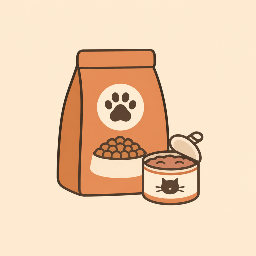
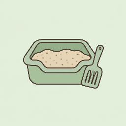
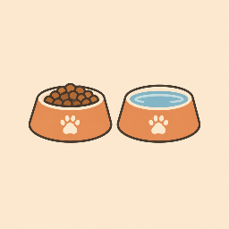
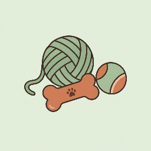
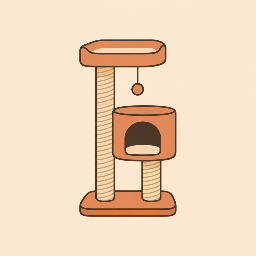
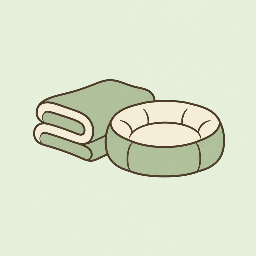

Gala
Maca · 2 godine · ženka✓ Vakcinisana✓ SterilisanaMazna i mirna
Pronađena u kutiji ispred prodavnice, pokisla i uplašena. Danas obožava da prede u krilu i spava na suncu.
Želim da udomim GaluNa ulici ih čekaju hladne noći, glad i strah. Kod vas ih može čekati ćebe, puna činija i neko ko će ih voleti. Udomite, donirajte ili podelite priču.
Skloništa su puna, a na ulicama se svake godine rađaju hiljade mačića i štenaca koji ne dočekaju svoj prvi rođendan. Udomljavanje spašava pojedinačne živote, ali jedino sterilizacija zaustavlja krug patnje u korenu.
Sterilisane životinje su zdravije i mirnije: manji je rizik od tumora i infekcija, manje lutaju i manje se tuku. Jedna intervencija znači da se na ulici neće roditi desetine novih legla.
Izvor: procene koje navode međunarodne organizacije za zaštitu životinja (npr. PETA, The Humane Society). Brojke su teorijske i pretpostavljaju da svi potomci prežive i nastave da se razmnožavaju.
životinja je već sterilisano
To su hiljade legla koja se nikada neće roditi na hladnom asfaltu. Svaka maca i kuca na ovim fotografijama vraćena je na sigurno – zdrava, zbrinuta i obeležena.
Svaka uplata direktno pokriva troškove intervencije, lekova i oporavka. Jedna sterilisana maca znači da se na ulici neće roditi desetine mačića osuđenih na glad, bolest i hladnoću. Vaš doprinos sprečava patnju pre nego što počne.
Nijedna donacija nije premala. I 100 dinara kada se sabere sa tuđim postaje mnogo za one kojima najviše treba. Naši volonteri već sada izdvajaju od svog novca za sterilizacije, jer ne mogu da okrenu glavu od onih kojima je pomoć potrebna. Svaka vaša uplata znači da ovaj teret ne nose sami.
Kliknite na „Kopiraj“ pored podatka i nalepite ga u svoju bankarsku aplikaciju.
Proviziju banke za uplatu snosi uplatilac. Kod uplata iz inostranstva i banka posrednik može naplatiti trošak, pa na račun može stići nešto manji iznos od uplaćenog.
Materijalne donacije možete doneti lično ili poslati poštom. Javite nam se pre slanja kako bismo znali šta nam najviše treba.

Suva i vlažna hrana za kuce i mace.

Grudvajući ili silikonski pesak – trošimo ga svakog dana.

Keramičke, metalne ili plastične činije koje se lako peru.

Loptice, plišane igračke i sve čime kuce i mace vole da se igraju.

Da mace imaju gde da se penju, igraju i oštre nokte.

Topla ćebad, peškiri i jastučići za hladne noći.
Kada naiđete na tek rođene mačiće ili štence, ne treba vam ni dvorište ni iskustvo. Dovoljno je kupatilo ili odvojena soba u kojoj će bebe privremeno boraviti, kutija sa ćebetom i malo vašeg vremena. Za nekoliko nedelja od bespomoćnog bića izraste razigrana životinja spremna za dom, a vi ste spasili jedan život.
Bebe ne mogu same da održe toplotu. Stavite ih u kutiju sa ćebetom i termoforom ili flašom tople vode umotanom u peškir, na jednoj strani kutije, da mogu da se odmaknu ako im je toplo. U prvoj nedelji gnezdo treba da bude 29–32 °C, a do četvrte nedelje postepeno se spušta na oko 24 °C. Nikada ne hranite pothlađenu bebu, prvo je polako zagrejte.
Kupite zamenu za majčino mleko za mačiće ili za štence u veterinarskoj apoteci ili pet shopu. Kravlje mleko izaziva proliv koji kod beba može biti opasan po život. Formulu zagrejte na telesnu temperaturu i proverite kapljicom na unutrašnjoj strani zgloba.
Najmanje bebe najlakše je hraniti špricem bez igle, kap po kap, a kasnije flašicom sa cuclom. Beba uvek leži na stomaku, kao kada sisa kod majke, nikada na leđima, da joj formula ne bi otišla u pluća. Ne gurajte hranu na silu, pustite je da sisa svojim tempom.
Do treće ili četvrte nedelje bebe ne mogu same da obave nuždu. Posle svakog obroka nežno masirajte stomačić i predeo ispod repa vatom ili gazom natopljenom mlakom vodom, dok ne piške i ne kake. Mokrenje treba da bude posle svakog obroka, a stolica bar jednom dnevno.
Bebe još nemaju razvijen imunitet, pa ih i najmanja infekcija može ugroziti. Pre i posle svakog hranjenja i čišćenja dobro operite ruke sapunom, nosite čistu odeću ili poseban duks samo za bebe, a špriceve, flašice i cucle posle svake upotrebe operite i prokuvajte. Držite ih odvojeno od drugih životinja u kući, bez zajedničkih činija, ćebadi i posuda za pesak, dok ih veterinar ne pregleda i ne prime vakcine.
Mekana četkica za zube podseća na majčin jezik. Nežnim potezima niz leđa i glavu bebe se smiruju, lakše jedu i osećaju se sigurno. Tako ih istovremeno i čistite, a vama to postane najlepši deo dana.
Novorođeno mače teško je oko 90 do 110 grama i potpuno zavisi od nas: ne vidi, ne čuje i ne može samo da se greje ni da obavi nuždu.
Merite mače svakog dana u isto vreme, pre hranjenja, na kuhinjskoj vagi koja meri na gram. Zapisujte rezultate u svesku ili telefon. Zdravo mače dobija 10 do 15 grama dnevno. Ako težina stoji ili pada, to je prvi znak da nešto nije u redu.
Količine su orijentacione. Uvek proverite uputstvo na pakovanju formule i pratite težinu.
Težina novorođenog šteneta zavisi od rase, od 100 grama do preko pola kilograma, pa je kod štenaca važnije pratiti koliko napreduju nego koliko teže.
Merite štene svakog dana u isto vreme, pre hranjenja. Zdravo štene dnevno dobija 5 do 10% svoje težine i udvostručuje porođajnu težinu za 7 do 10 dana. Kod štenaca se dnevna količina računa prema težini: izmerite štene, izračunajte koliko mu treba za ceo dan i podelite na broj obroka.
Vrednosti su za štene srednje veličine, kakva je većina mešanaca. Za male i velike rase računajte dnevno 13 do 22 ml formule na 100 g težine, podeljeno na obroke. Uvek proverite uputstvo na pakovanju formule i pratite težinu.
Kod beba stanje može da se pogorša za nekoliko sati, zato ne čekajte jutro.
Briga ne prestaje kada bebe prohodaju. Ovi koraci osiguravaju da svaka beba dobije dobar dom i da se priča ne ponovi.
Ako je majka pored mladunaca, pobrinite se da bude sterilisana čim ih odbije. Tako sprečavate da za nekoliko meseci na ulici bude novo leglo. Javite nam se, pomoći ćemo.
Mladunci su spremni za novi dom kada napune 3 do 3,5 meseca. Tada se sami hrane, koriste pesak, socijalizovani su i primili su prve vakcine.
Delite slike i snimke na društvenim mrežama, u lokalnim grupama i kod prijatelja. Odštampajte plakate sa slikom i brojem telefona i zalepite ih po gradu, u veterinarskim ambulantama i prodavnicama. Što više ljudi vidi bebe, brže će naći dom.
Pre predaje obavezno se dogovorite sa udomiteljem da će životinja biti sterilisana na vreme i da će o njoj odgovorno brinuti: hrana, veterinar, bezbedan prostor i ljubav za ceo život.
Ne treba vam ništa posebno: jedna soba, malo strpljenja i veliko srce. Učinićete ogromno dobro delo i spasiti život.
Pronašli smo ga mršavog i prozeblog ispod parkiranog automobila. Danas spava na jastuku između svoje dve devojčice i svako jutro ih ispraća do vrata. Porodica kaže da ne znaju kako su živeli bez njega.
Udomljen u martu · Novi SadMedo je u skloništu proveo gotovo tri godine. Bio je stariji, krupan i tih, pa su ga mnogi zaobilazili. Onda je stigao jedan penzioner koji je tražio društvo za jutarnje šetnje. Sada su nerazdvojni.
Udomljen u junu · BeogradAzra uzeta jedne kišne noći, od tad nije izašla iz kuće, klasična kućna buva. U slobodno vreme drema pored peći i grejalica, noću spava isključivo na jastuku, krade gumice za kosu, jede slušalice i donosi loptice kao pravi ker.
Hobi-bije svog brata pukija i ne da mu mira
Omiljena hrana-granule preko 1000din
Mana-hrče kao deda
Strah-njen brat Laki koj voli da je muči a ona beži kod mame i posle tuče plače